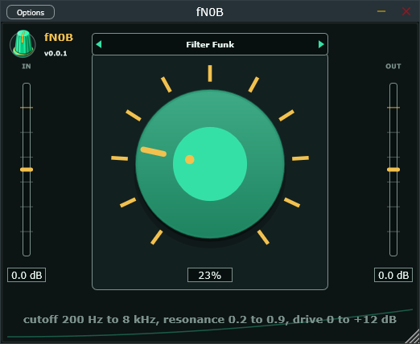

ƒN0B
One knob. That is the whole plugin.
You wanted a plugin you cannot get lost in. ƒN0B is a single knob and a preset list. Each preset is one effect or a short chain, and the knob sweeps the parameters that matter together, so turning it up always goes somewhere good. Clean to crushed, tight to huge, no menus to dig through.
It is part of Stupid Audio, the family of free plugins. The instruments live over there.
The Knob
One control, and nothing else to touch. The current preset decides what it does, and the line under the knob tells you what is moving right now. Double-click returns it to the start.
- 0% — the preset's starting point: usually clean or wide open.
- 100% — the full character: driven, crushed, resonant, or closed down.
- Double-click — snap back to 0%.
Presets
The preset bar steps with the arrows and opens a list when you click the middle. Each preset maps the knob onto its own chain in the way that sounds best.
- Warm Drive — soft clip warming up while the top end closes down.
- Filter Funk — a resonant low-pass sweep with drive riding along.
- Bitcrush Destruct — sample rate, bit depth, and clip, all degrading together.
- Tape Echo — slap to long, saturating, darkening repeats.
- Shimmer Verb — a room that grows an octave bloom in the tail.
- Phaser Sweep — slow swirl to a jet-plane sweep.
